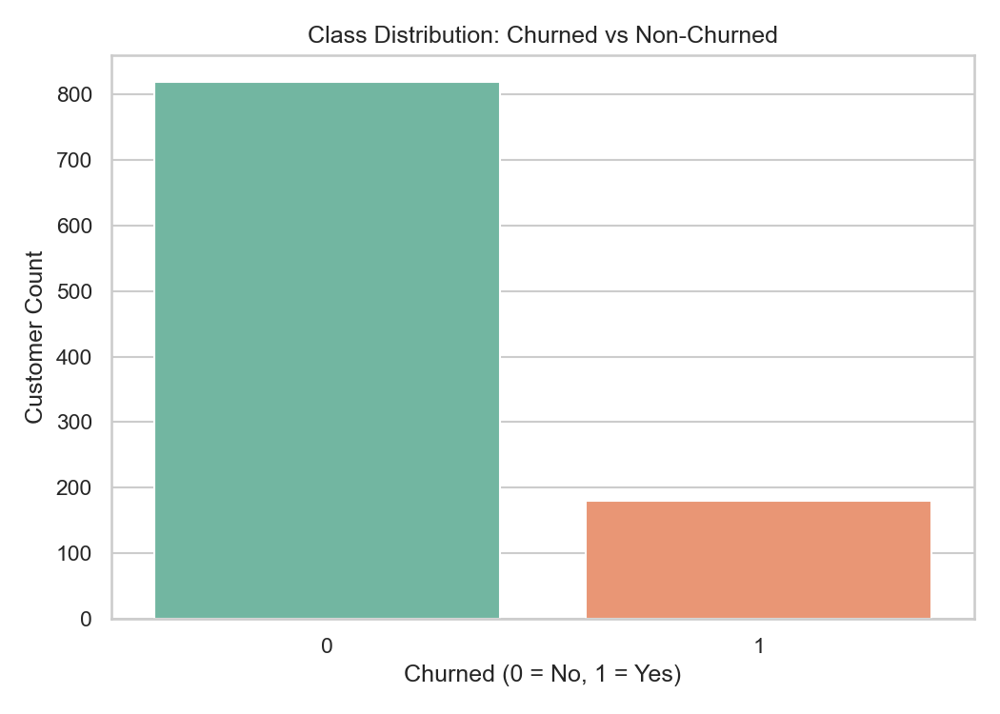
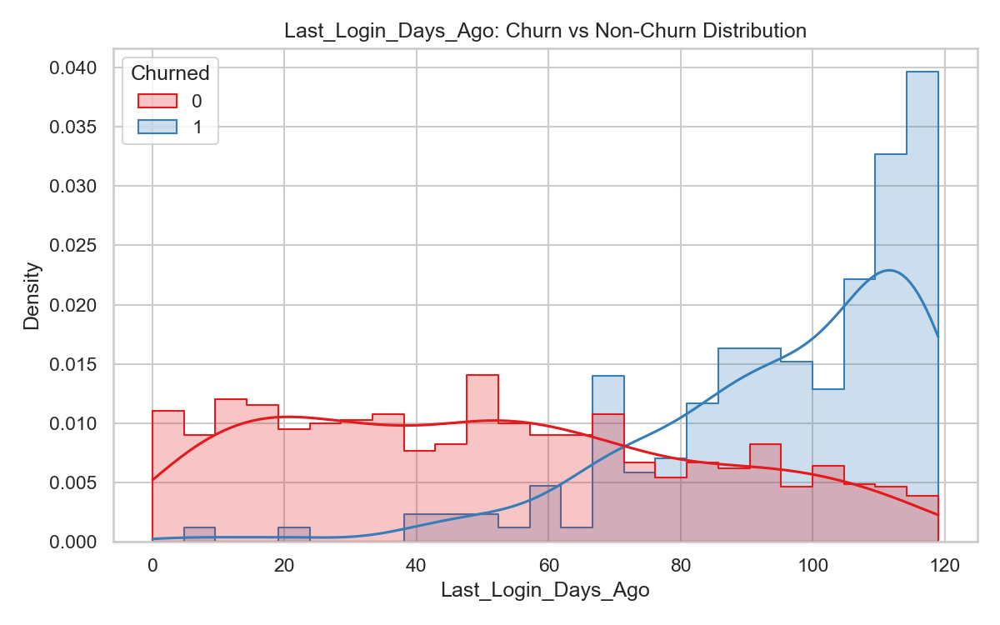
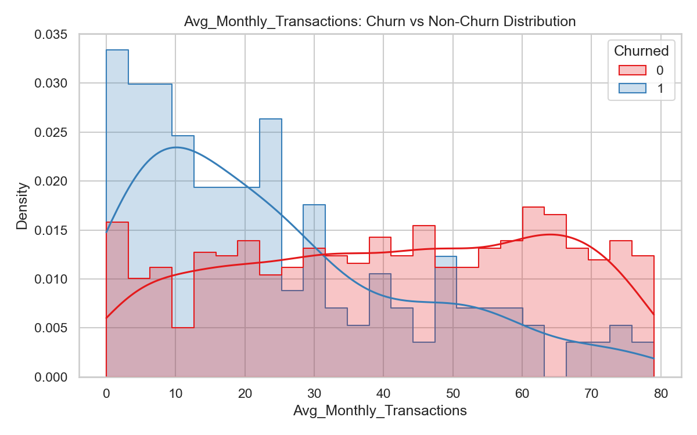
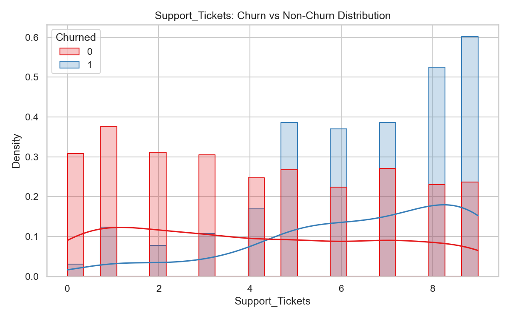
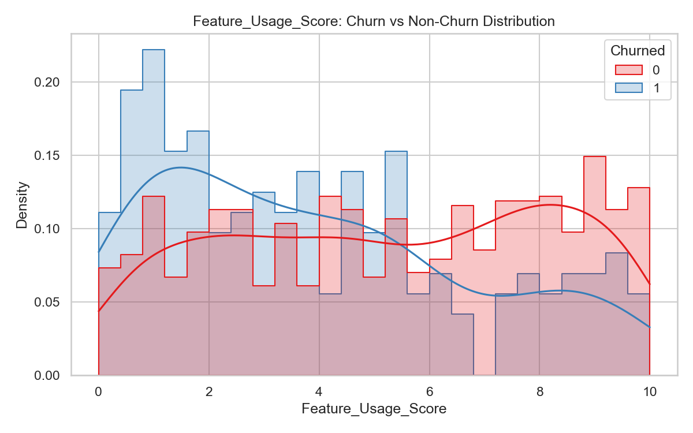
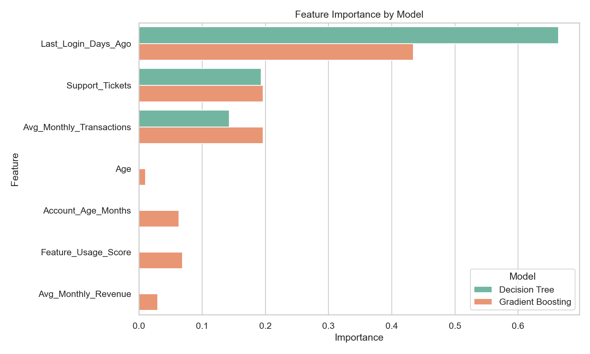

Executive View
Customers to protect first
Loading model results...
Risk Distribution
Low, medium, and high churn-risk customers.
Priority Segments
Retention segments based on churn probability and CLV.
Churn Probability Spread
Distribution of model churn scores across all customers.
CLV vs Churn Risk
Upper-right customers are expensive to lose.
Model Explainability
What is driving churn?
Gradient Boosting Feature Importance
Top behavioral signals used by the strongest model.
Business Readout
Summary generated from the model and top-save patterns.
Primary churn warning
Longer inactivity is the strongest risk signal.
Revenue lens
CLV keeps the campaign focused on value, not only probability.
Action path
Start with reactivation offers, then support recovery for friction-heavy users.
Retention Operations
Top customers to save
Top-20 Priority Scores
Highest urgency customers by probability x CLV.
Retention Reasons
Most common intervention trigger in the save list.
Top-20 List
Customer lookup
Urgent Save List
Top 20 customers for immediate campaign outreach.
| Rank | Customer | Churn Probability | CLV | Priority Score | Segment | Reason |
|---|
EDA Gallery
Data patterns behind the model





